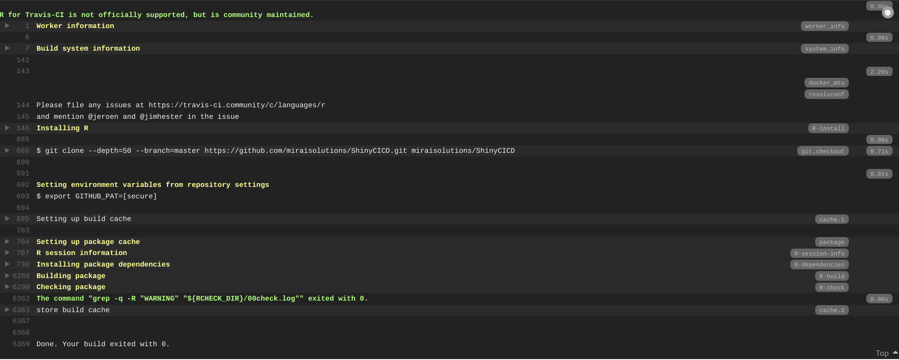
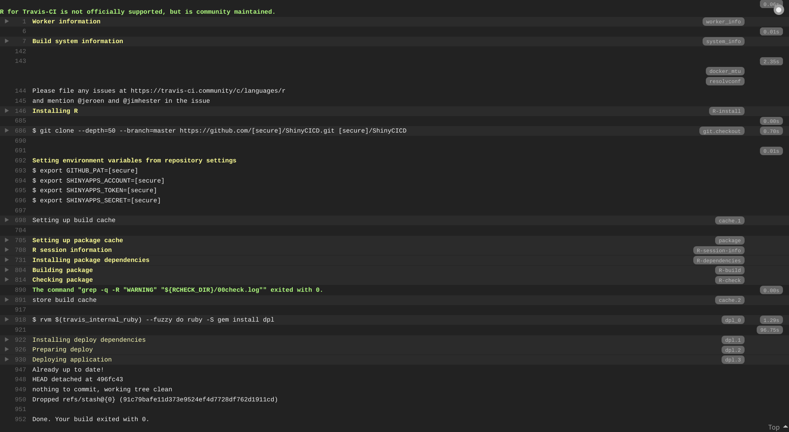

3.2 Travis CI
Travis CI is an open-source continuous integration service that can be used to build and test software projects hosted on GitHub. To set up Travis CI you need to login at https://travis-ci.com/ (using your GitHub account) and provide authorization via GitHub (see Travis CI Tutorial).
3.2.1 Standard CI setup
To setup Travis CI in a project use:
This will generate a generic .travis.yml file
# R for travis: see documentation at https://docs.travis-ci.com/user/languages/r
language: R
cache: packagesAs default, Travis CI takes care of package dependency installation and performs the typical package build & check you would run locally via e.g. devtools::check(). Such CI pipeline is triggered by any push event on any branch on the GitHub repo, including pull requests.

3.2.2 Using renv for your project
If your project relies on package renv for tracking dependencies via an renv.lock file, you should override the default installation package dependencies and make sure cacheing is adjusted accordingly, as follows
cache:
directories:
- $HOME/.local/share/renv
- $TRAVIS_BUILD_DIR/renv/library
install:
- Rscript -e "if (!requireNamespace('renv', quietly = TRUE)) install.packages('renv')"
- Rscript -e "renv::restore()"as described in the Using renv with Continuous Integration vignette.
3.2.3 Automated deployment
Travis CI can be setup to perform a deployment (e.g. publish a shiny app on shinyapps.io) upon any push to the master branch, provided the CI checks pass.
This is achieved for a shinyapps.io deployment by specifying in .travis.yml an additional deploy: section as
deploy:
provider: script
skip_cleanup: true # strictly necessary only for the renv case
script:
- >-
Rscript
-e 'account_info <- lapply(paste0("SHINYAPPS_", c("ACCOUNT", "TOKEN", "SECRET")), Sys.getenv)'
-e 'do.call(rsconnect::setAccountInfo, account_info)'
-e 'rsconnect::deployApp(appName = "ShinyCICD")'
on:
branch: masterwhere SHINYAPPS_ACCOUNT, SHINYAPPS_TOKEN, SHINYAPPS_SECRET are secure variables defined on Travis CI holding your account name and corresponding tokens for shinyapps.io.
It is in fact more convenient to write an R script, saved e.g. as deploy/deploy-shinyapps.R (build-ignored via usethis::use_build_ignore("deploy")) defining the deployment commands:
# deploy/deploy-shinyapps.R
# usethis::use_build_ignore("deploy")
rsconnect::setAccountInfo(
Sys.getenv("SHINYAPPS_ACCOUNT"),
Sys.getenv("SHINYAPPS_TOKEN"),
Sys.getenv("SHINYAPPS_SECRET")
)
rsconnect::deployApp(
appName = "ShinyCICD",
# exclude hidden files and renv directory (if present)
appFiles = setdiff(list.files(), "renv")
)and then simply execute it as deploy script:
3.2.4 Putting it all together
The final .travis.yml file (for the non-renv case) would look like
# R for travis: see documentation at https://docs.travis-ci.com/user/languages/r
language: R
cache: packages
deploy:
provider: script
script: Rscript deploy/deploy-shinyapps.R
on:
branch: masterAs visible from the run logs, all the CI/CD pipeline steps are performed, despite only the deployment step being explicitly defined.
